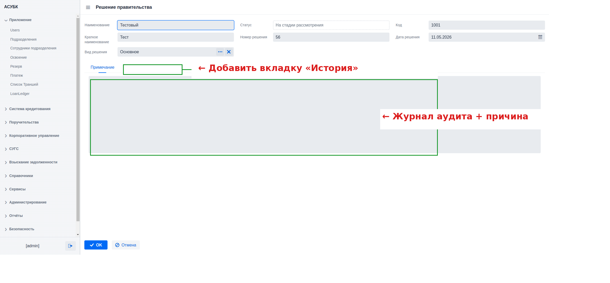

Документ для согласования · Версия 1.0 · 20.06.2026 · Тестовая среда https://fkftest.okmot.kg/
Содержание
Назначение задачи
Как сейчас (проблема)
Что предлагаем
Правила и поведение
Как это увидит пользователь
Критерии приёмки
Открытые вопросы
1. Назначение задачи
Страница решения правительства — это центральная карточка юридического акта,
на основании которого открываются кредитные программы. Сотрудник должен на ней
спокойно читать реквизиты, видеть статус, открывать документы
и историю изменений, а редактирование включать осознанно. Сейчас страница —
это плоский набор форм без единого режима просмотра; цель задачи — переработать её
в режим «Просмотр + действия» по готовому макету.
2. Как сейчас (проблема)
Факт (проверено 2026-06-19). Страница решения сейчас — это набор
неактивных форм без единого режима просмотра. Накопленные UX-дефекты:
P1-06. Поля не сигнализируют семантику: редактируемые и обязательные
выглядят так же, как read-only — непонятно, что можно менять и что обязательно.
P1-07. Действия «Одобрить / Изменить / Отклонить / Удалить» стоят в один
ряд одного веса — нет приоритета основного действия и нет защиты деструктивных.
P1-08. «Статус» теряется среди прочих полей — главный признак решения
визуально не выделен.
P1-09. Поля идут одним плоским списком без группировки по смыслу.
P1-10. Нет видимой истории — не видно, кто и когда менял статус решения.

Текущая страница решения: плоский набор форм, статус и история не выделены.
3. Что предлагаем
Сделать страницу в режиме «Просмотр + действия» по готовому макету
mockups/decision-detail.html. Макет
передаётся команде разработки как образец вёрстки и дизайн-системы; отрисовку
в продукте делать на стеке проекта по образцу макета.
4. Правила и поведение
Компонент
Правило
Слева — навигация
Дерево-навигация модуля: Кредиты → Программы и решения → Решение правительства.
Шапка
Хлебные крошки + номер решения + бейдж статуса (решает P1-08):
«На рассмотрении» → янтарный; «Действует»/«Одобрен» → зелёный;
«Закрыт» → серый/красный.
Режим просмотра (подпись → значение, без редактируемых полей):
Вид решения, Номер, Дата, Орган, Наименование, Примечание, «Действующее решение»
(бейдж Да/Нет). Группировка в карточки решает P1-09.
Вкладка «Кредитные программы»
Таблица связанных кредитных программ.
Вкладка «Документы»
Таблица вложений (увязать с R1).
Вкладка «История»
Таймлайн действий с иконками по типу (создание /
изменение / загрузка / смена статуса), увязать с журналом аудита R2 (решает P1-10).
Футер
«Изменить» (вход в режим редактирования) + «Назад». В режиме
редактирования поля становятся инпутами дизайн-системы, футер — OK / Отмена.
Семантика полей (решает P1-06)
Обязательное-редактируемое → белый фон + рамка + красный *;
опциональное → белый фон без *; только для чтения/вычисляемое → серый фон без рамки.
Приоритет действий (решает P1-07)
Одна основная (filled) кнопка по статусу;
«Отклонить»/«Удалить» → красный контур, отдельно, с подтверждением (увязать с R2).
5. Как это увидит пользователь
1Открыть решение
Из списка решений сотрудник открывает запись → страница
открывается в режиме «Просмотр» с бейджем статуса в шапке.
2Переключать вкладки
Переключение по вкладкам «Общая информация» /
«Кредитные программы» / «Документы» / «История» — каждый блок информации
на своём месте.
3Действия по статусу
Основное действие выделено по текущему статусу;
деструктивные («Отклонить»/«Удалить») вынесены отдельно и требуют
подтверждения.
4Редактирование
Кнопка «Изменить» переводит страницу в режим
редактирования (поля становятся инпутами дизайн-системы), сохранение —
OK / Отмена.